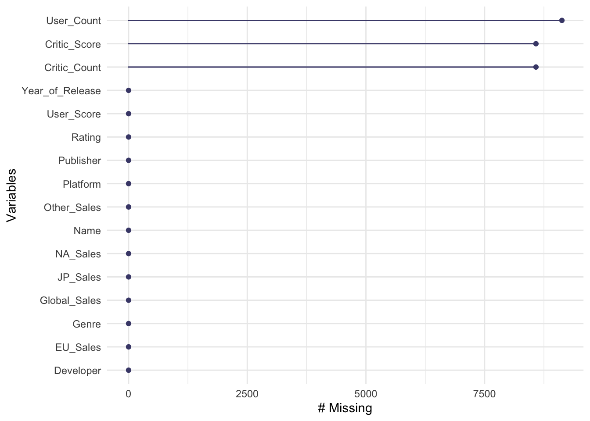
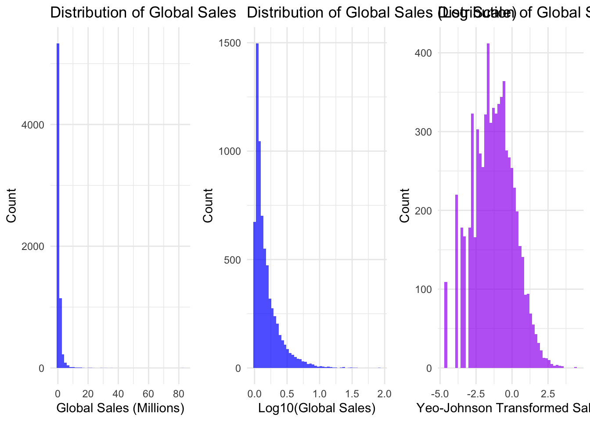
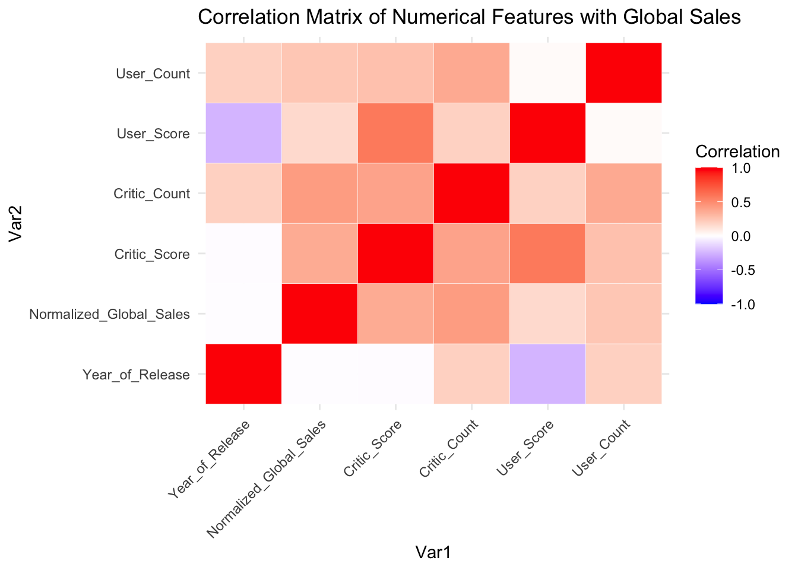
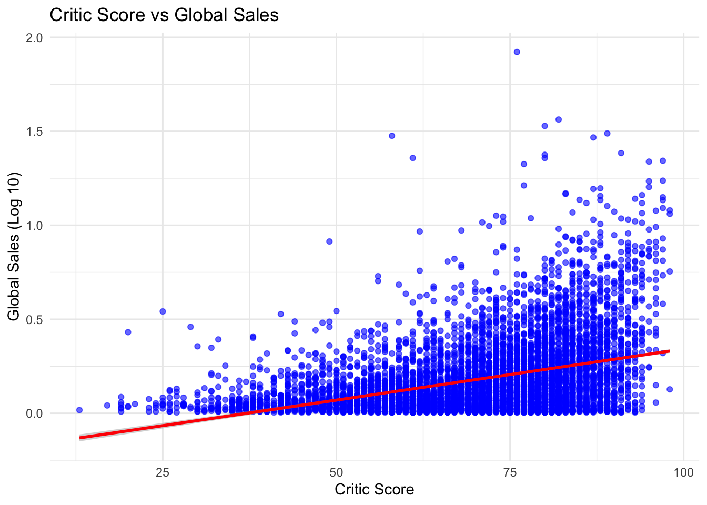
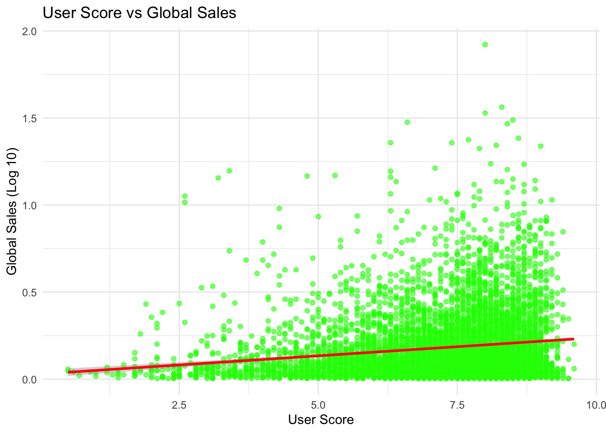
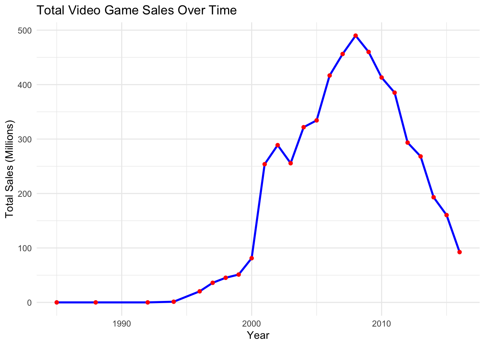
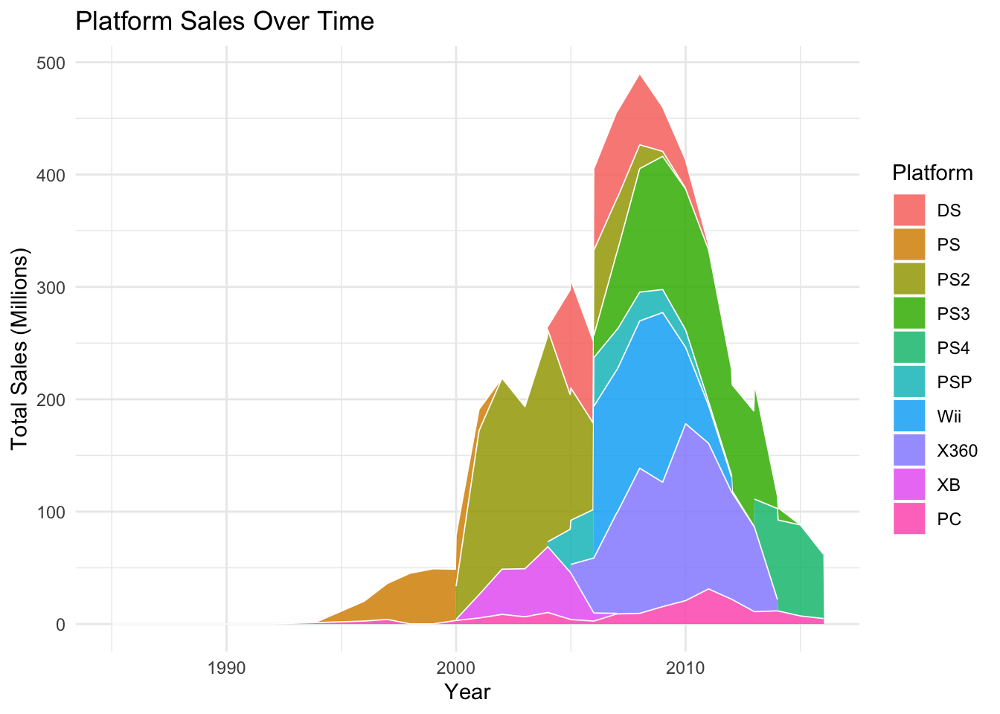
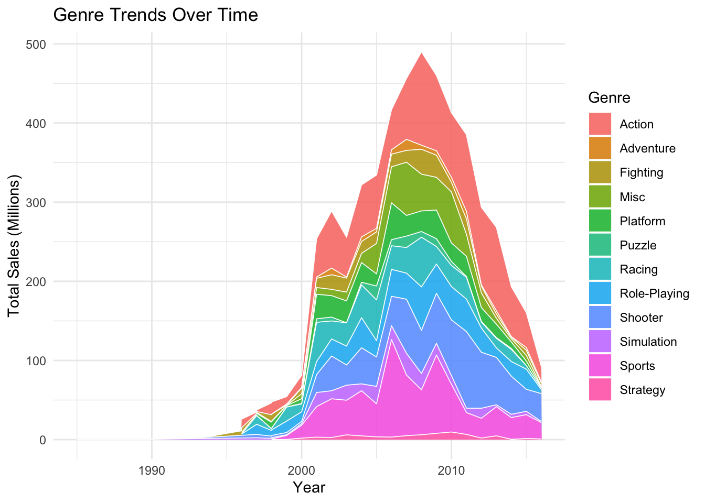

suppressPackageStartupMessages({
suppressWarnings({
library(tidyverse)
library(ggplot2)
library(gridExtra)
library(dplyr)
library(naniar)
library(reshape2)
library(caret)
library(forcats)
library(glmnet)
library(car)
library(patchwork)
library(rpart)
library(rpart.plot)
library(bestNormalize)
})
})Video Game Sales Analysis
Load the Libraries
1. Introduction
The purpose of this analysis is to explore the factors that drive video game sales using various statistical techniques. The study focuses on understanding what influences a game’s long-term success, how ratings impact sales, and how different platforms and genres affect sales patterns.
The analysis leverages multiple regression models, regularization techniques such as ridge and lasso regression for feature selection, and time-series analysis to identify sales trends over time.
Key Objectives: - To determine which factors contribute to a game’s long-term commercial success. - To analyze whether critic ratings or user ratings have a stronger influence on sales. - To examine the impact of game genres on sales stability. - To investigate how platform choices influence a game’s overall success.
The dataset used in this study is a publicly available video game sales dataset, which includes information such as platform, genre, publisher, critic scores, user scores, and sales figures across different regions. The dataset provides historical insights into the video game industry and allows for a detailed exploration of market trends and factors affecting sales performance.
2. Data Preprocessing
2.1 Loading the Data
games <- read.csv("./video_game_sales.csv")
str(games)'data.frame': 16719 obs. of 16 variables:
$ Name : chr "Wii Sports" "Super Mario Bros." "Mario Kart Wii" "Wii Sports Resort" ...
$ Platform : chr "Wii" "NES" "Wii" "Wii" ...
$ Year_of_Release: chr "2006" "1985" "2008" "2009" ...
$ Genre : chr "Sports" "Platform" "Racing" "Sports" ...
$ Publisher : chr "Nintendo" "Nintendo" "Nintendo" "Nintendo" ...
$ NA_Sales : num 41.4 29.1 15.7 15.6 11.3 ...
$ EU_Sales : num 28.96 3.58 12.76 10.93 8.89 ...
$ JP_Sales : num 3.77 6.81 3.79 3.28 10.22 ...
$ Other_Sales : num 8.45 0.77 3.29 2.95 1 0.58 2.88 2.84 2.24 0.47 ...
$ Global_Sales : num 82.5 40.2 35.5 32.8 31.4 ...
$ Critic_Score : int 76 NA 82 80 NA NA 89 58 87 NA ...
$ Critic_Count : int 51 NA 73 73 NA NA 65 41 80 NA ...
$ User_Score : chr "8" "" "8.3" "8" ...
$ User_Count : int 322 NA 709 192 NA NA 431 129 594 NA ...
$ Developer : chr "Nintendo" "" "Nintendo" "Nintendo" ...
$ Rating : chr "E" "" "E" "E" ...summary(games) Name Platform Year_of_Release Genre
Length:16719 Length:16719 Length:16719 Length:16719
Class :character Class :character Class :character Class :character
Mode :character Mode :character Mode :character Mode :character
Publisher NA_Sales EU_Sales JP_Sales
Length:16719 Min. : 0.0000 Min. : 0.000 Min. : 0.0000
Class :character 1st Qu.: 0.0000 1st Qu.: 0.000 1st Qu.: 0.0000
Mode :character Median : 0.0800 Median : 0.020 Median : 0.0000
Mean : 0.2633 Mean : 0.145 Mean : 0.0776
3rd Qu.: 0.2400 3rd Qu.: 0.110 3rd Qu.: 0.0400
Max. :41.3600 Max. :28.960 Max. :10.2200
Other_Sales Global_Sales Critic_Score Critic_Count
Min. : 0.00000 Min. : 0.0100 Min. :13.00 Min. : 3.00
1st Qu.: 0.00000 1st Qu.: 0.0600 1st Qu.:60.00 1st Qu.: 12.00
Median : 0.01000 Median : 0.1700 Median :71.00 Median : 21.00
Mean : 0.04733 Mean : 0.5335 Mean :68.97 Mean : 26.36
3rd Qu.: 0.03000 3rd Qu.: 0.4700 3rd Qu.:79.00 3rd Qu.: 36.00
Max. :10.57000 Max. :82.5300 Max. :98.00 Max. :113.00
NA's :8582 NA's :8582
User_Score User_Count Developer Rating
Length:16719 Min. : 4.0 Length:16719 Length:16719
Class :character 1st Qu.: 10.0 Class :character Class :character
Mode :character Median : 24.0 Mode :character Mode :character
Mean : 162.2
3rd Qu.: 81.0
Max. :10665.0
NA's :9129 2.2 Handling Missing Values
gg_miss_var(games)
games <- na.omit(games)2.3 Feature Engineering
games <- games %>%
mutate(
Year_of_Release = suppressWarnings(as.numeric(as.character(Year_of_Release))),
User_Score = as.numeric(User_Score),
Platform = as.factor(Platform),
Genre = as.factor(Genre),
Publisher = as.factor(Publisher),
Rating = as.factor(Rating)
) %>%
filter(!is.na(Year_of_Release))2.4 Data Transformation
2.4.1 Log Transformation for Global Sales
games$Log_Global_Sales <- log(games$Global_Sales + 1)3. Exploratory Data Analysis (EDA)
3.1 Sales Distribution
To better understand the distribution of Global_Sales, we first plotted its raw values. As shown, the data is highly skewed and long-tailed, with most values clustered near zero and a few extremely large sales figures. To address this skewness, we applied a log₁₀ transformation, which compresses large values and spreads out smaller ones, resulting in a more balanced distribution. Additionally, we used the Yeo-Johnson transformation to further normalize the data and improve its symmetry for modeling purposes.
Yeo-Johnson Transformation
games_yj <- games
yj_transform <- bestNormalize(games_yj$Global_Sales, standardize = FALSE)Warning: `progress_estimated()` was deprecated in dplyr 1.0.0.
ℹ The deprecated feature was likely used in the bestNormalize package.
Please report the issue to the authors.games_yj$Normalized_Global_Sales <- predict(yj_transform)Distribution Plots
p1 <- ggplot(games, aes(x = Global_Sales)) +
geom_histogram(bins = 50, fill = "blue", alpha = 0.7) +
theme_minimal() +
labs(title = "Distribution of Global Sales", x = "Global Sales (Millions)", y = "Count")
games_log <- games
games_log$Log_Global_Sales <- log10(games_log$Global_Sales + 1)
p2 <- ggplot(games_log, aes(x = Log_Global_Sales)) +
geom_histogram(bins = 50, fill = "blue", alpha = 0.7) +
theme_minimal() +
labs(title = "Distribution of Global Sales (Log Scale)", x = "Log10(Global Sales)", y = "Count")
p3 <- ggplot(games_yj, aes(x = Normalized_Global_Sales)) +
geom_histogram(bins = 50, fill = "purple", alpha = 0.7) +
theme_minimal() +
labs(title = "Distribution of Global Sales (Yeo-Johnson)", x = "Yeo-Johnson Transformed Sales", y = "Count")
grid.arrange(p1, p2, p3, ncol = 3)
3.2 Correlation Analysis
numerical_cols <- c("Year_of_Release", "Normalized_Global_Sales", "Critic_Score",
"Critic_Count", "User_Score", "User_Count")
correlation_matrix <- cor(games_yj[, numerical_cols], use = "complete.obs")
correlation_long <- melt(correlation_matrix)
ggplot(correlation_long, aes(x = Var1, y = Var2, fill = value)) +
geom_tile(color = "white") +
scale_fill_gradient2(low = "blue", high = "red", mid = "white",
midpoint = 0, limit = c(-1, 1), space = "Lab",
name = "Correlation") +
theme_minimal() +
labs(title = "Correlation Matrix of Numerical Features with Global Sales") +
theme(axis.text.x = element_text(angle = 45, hjust = 1))
3.3 Scatter Plots: Ratings vs. Sales
ggplot(games_log, aes(x = Critic_Score, y = Log_Global_Sales)) +
geom_point(alpha = 0.6, color = "blue") +
geom_smooth(method = "lm", color = "red") +
theme_minimal() +
labs(title = "Critic Score vs Global Sales", x = "Critic Score", y = "Global Sales (Log 10)")`geom_smooth()` using formula = 'y ~ x'
ggplot(games_log, aes(x = User_Score, y = Log_Global_Sales)) +
geom_point(alpha = 0.6, color = "green") +
geom_smooth(method = "lm", color = "red") +
theme_minimal() +
labs(title = "User Score vs Global Sales", x = "User Score", y = "Global Sales (Log 10)")`geom_smooth()` using formula = 'y ~ x'
3.4 Sales Trends Over Time
yearly_sales <- games %>%
group_by(Year_of_Release) %>%
summarise(Total_Sales = sum(Global_Sales, na.rm = TRUE))
ggplot(yearly_sales, aes(x = Year_of_Release, y = Total_Sales)) +
geom_line(linewidth = 1, color = "blue") +
geom_point(linewidth = 2, color = "red") +
theme_minimal() +
labs(title = "Total Video Game Sales Over Time", x = "Year", y = "Total Sales (Millions)")Warning in geom_point(linewidth = 2, color = "red"): Ignoring unknown
parameters: `linewidth`
in## 3.5 Platform Popularity Over Time
platform_trends <- games %>%
group_by(Year_of_Release, Platform) %>%
summarise(Total_Sales = sum(Global_Sales, na.rm = TRUE)) %>%
filter(!is.na(Year_of_Release))`summarise()` has grouped output by 'Year_of_Release'. You can override using
the `.groups` argument.top_platforms <- platform_trends %>%
group_by(Platform) %>%
summarise(Total_Sales = sum(Total_Sales)) %>%
arrange(desc(Total_Sales)) %>%
slice(1:10)
platform_trends_filtered <- platform_trends %>%
filter(Platform %in% top_platforms$Platform) %>%
mutate(Platform = fct_reorder(Platform, Total_Sales, .fun = sum, .desc = TRUE))
ggplot(platform_trends_filtered, aes(x = Year_of_Release, y = Total_Sales, fill = Platform)) +
geom_area(position = "stack", alpha = 0.85, color = "white", size = 0.3) +
theme_minimal() +
labs(title = "Platform Sales Over Time", x = "Year", y = "Total Sales (Millions)")Warning: Using `size` aesthetic for lines was deprecated in ggplot2 3.4.0.
ℹ Please use `linewidth` instead.
3.6 Genre Trends Over Time
genre_trends <- games %>%
group_by(Year_of_Release, Genre) %>%
summarise(Total_Sales = sum(Global_Sales, na.rm = TRUE)) %>%
filter(!is.na(Year_of_Release))`summarise()` has grouped output by 'Year_of_Release'. You can override using
the `.groups` argument.ggplot(genre_trends, aes(x = Year_of_Release, y = Total_Sales, fill = Genre)) +
geom_area(position = "stack", alpha = 0.85, color = "white", size = 0.3) +
theme_minimal() +
labs(title = "Genre Trends Over Time", x = "Year", y = "Total Sales (Millions)")